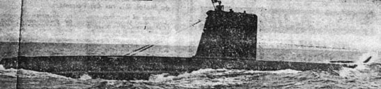
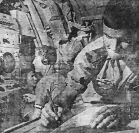

|
Deux jours parmi les "moins
300 mètres" à bord du sous marin "La Minerve" |
|||
|
La " Minerve ", qui est entré en action voici un peu plus d'un an, est un cigare d'acier peint en noir de 58 mètres de long et de 6 m. 75 de large ; c'est un des sous-marins à " hautes performances " du type "Daphné" de la Marine nationale, et je viens d'avoir le privilège de vivre quarante-huit heures à son bord  |
|||
|
La "Minerve"
fait partie de la génération d'après-guerre des sous-marins. Entre
le U-Boote de la Kriegsmarine et le sous-marin, actuel, il existe
la même différence qu'entre une locomotive à vapeur et une locomotive
électrique. Cette différence peut être ex-primée par deux chiffres.
Le U-Boote de 1939-45 qui représentait le "nec plus ultra"
en matière de navigation sous-marine se déplaçait à 15-20 nœuds en
surface et se traînait à 8 nœuds en immersion. En 1964, les sous-marins
vont plus vite en plongée qu'en surface et le "Narval" qui atteint
16 nœuds en surface,-glisse entre deux eaux à la vitesse de 19 noeuds
(1 nœud égal "1 mille marin-heure", soit 1.852 mètres-heure).
Avec la Minerve la flotte sous-marine française moderne comprend 8
autres sous-marins à hautes performances du type "Daphné" de
850 tonnes, quatre chasseurs de sous-marins type "Arethuse" (400 tonnes)
et six sous-marins de types "océaniques" de type "Narval"
(1.200 tonnes). Cette flotte s'enrichira bientôt du sous-marin d'essai
"Gymnote" dont le lancement est prévu le 15 mars,
du premier sous-marin atomique "Q 252" et de quatre autres
navires de cette catégorie. Ces sous-marins n'ont plus rien de commun
aveu l'image des submersibles popularisés par les films de
guerre. Le pont de la
"Minerve" ne comporte qu'une sorte de kiosque de forme oblongue, de
4 mètres 50 de haut protégeant les périscopes de veille et d'attaque,
les antennes radios et radar, la prise d'air du schnorchel et l'orifice
d'échappement du moteur. Le canon, les mitrailleuses antiaériennes.
la scie antifilet, tout cela a disparu. En quelques chiffres, la "
Minerve " c'est aussi 850 tonnes en surface, 1.040 en immersion, 16
nœuds en surface, une vitesse égale en plongée, 12 tubes lance-torpilles
(8 à l'avant et 4 à l'arrière), un équipage de 49 hommes, des diésels,
des moteurs électriques, des accumulateurs : un ensemble redoutable
et presque parfaitement silencieux. Lorsque j'embarque à bord de la
"Minerve" au petit jour, elle est tapie comme une bête
de proie, près de son sister ship la "Doris", sous le pâle
éclat de quelques lampes à incandescence, dans le port militaire de
Toulon. Un vent aigrelet souffle du large. Sur le pont de la "Minerve"
un matelot, seul, pistolet au côté monte une garde, ponctuée par le
bruit métallique de ses pas sur le pont d'acier. Mais voici que tout
s'anime, avec le retour des deux tiers de l'équipage qui ne couchaient
pas à bord. L'appareillage est prévu pour 6 h 30. Avant l'arrivée
du commandant, le dernier, à embarquer, le second fait effectuer un
essai d'étanchéité. Tous les orifices du bâtiment sont soigneusement
clos et la pression à l'intérieur est abaissée de 200 millibars, soit
d'un quart de la pression atmosphérique normale, puis rétablie après
une série de contrôles. Une à une, les réponses fusent dans le central-opération.
"Etanche panneau de visite avant... Etanche logement..." Encore
une vingtaine de minutes avant le départ, juste le temps de parcourir
la "Minerve" de l'avant à l'arrière. Derrière l'étrave en bulbe qui
contient le sonar, se trouvent les 8 tubes lance-torpilles avant qui
ont la particularité de ne pas se recharger en mer. "Ce type
de sous-marin", me dit l'officier torpilleur, "n'emporte
que douze torpilles : une par tube. Pendant la guerre, les submersibles
emportaient beaucoup plus de torpilles et les lançaient par gerbe
pour être sûrs d'atteindre leur but. Aujourd'hui, avec les méthodes
de lancement moderne, nous envoyons une seule torpille à la fois.
Sinon avec les torpilles acoustiques que nous employons et qui se
dirigent sur le bruit des hélices de la cible, nos torpilles attirées
l'une par l'autre se suivraient dans la même trajectoire". Derrière
les torpilles se trouve la chambre des tubes où logent les 30 hommes
de l'équipage. Elle est meublée de 19 couchettes. 2 pour trois hommes,
d'une douche et d'un réfrigérateur pour les boissons. |
|||
| Dans
le Central-Opération Nous voici dans le carré des officiers qui à la taille d'un compartiment de chemin de fer. La chambre du commandant a deux mètres sur un environ, celle nient de chemin de fer. La chambre du commandant a deux mètres sur un environ, celle des officiers" le double, mais elle contient eue contient cinq couchettes et une table pliante. Pour ne perdre aucune place, un appareillage de calcul de tir a été placé en-dessous et empêche d'étendre ses jambes. La place ici se calcule au millimètre. Cette impression est confirmée lorsque j'entre dans le Central Opération. Le C.O., c'est le cerveau de la Minerve, les yeux et les oreilles du sous-marin. Dans le C.O. ont été rassemblés les périscopes de veille et d'attaque. les sonars, la radio, le radar, les dispositifs de lecture de cartes et de lancement des torpilles. Là se tient le commandant pendant les attaques, ou l'officier de quart pendant la navigation en plongée. Au-dessous de la " baignoire " et après le Central-Opération est situé le Central Sécurité-Plongée avec les commandes des barres de plongée avant et arrière et la barre, toutes les trois pouvant être actionnées par un système de pilotage automatique. Plus loin. vers l'arrière les réfrigérateurs où sont stockés les réserves de nourriture pour un mois, les cuisines de la même taille que celles d'un wagon-restaurant et les toilettes. Puis !es compartiments moteurs avec les Diesels et les moteurs électriques, enfin le carré des 16 officiers mariniers avec ses 11 couchettes et .ses quatre tubes lance - torpilles arrière. A l'ensemble de ces installations, il faut ajouter sous les planchers du carré des officiers et du C.O., les cent tonnes d'accumulateurs qui propulsent le bâtiment en plongée et sous le plancher du "Central Sécurité-Plongée ", les compresseurs d'air et d'huile et les sas d'évacuation des ordures. Le tour du sous-marin est fait. Il est l'heure d'appareiller. |
|||
|
Ma première plongée - Aux postes de
manœuvres " : l'ordre vient de retentir à l'interphone. Sur le pont.à
l'avant à l'arrière, l'équipage se prépare à larguer les
amarres. A 4 m 50 du sol sur une petite plateforme de deux mètres sur
un, le commandant la " Minerve ". un officier 30 ans s'est casé tant
bien que mal au côtés du second, de l'officier de manœuvre, du timonier
et d'un téléphoniste Une ultime vérification: Un cinéma pour
15 spectateurs A 300 mètres
de profondeur 30 m de profondeur,
ce n'est pas suffisant pour échapper aux grenades. En temps de guerre
la "Minerve" doit pouvoir descendre beaucoup plus bas. Silence et profondeur,
voilà ses deux atouts. Une étincelle
et ce serait la catastrophe A cette profondeur,
me dit le commandant, la moindre fuite et le bateau se remplirait à
la cadence de 100 litres à la seconde. L'eau y jaillerait à 280 km heure
par une ouverture de la grosseur du petit doigt et au bout de 3 à 4
minutes nous serions perdus. Sept à huit tonnes d'eau suffisent
à couler le bâtiment. A 300 mètres l'eau exerce une pression de 30 kg
par cm 2 et un bras s'offrant à un jet jaillissant de la coque serait
coupé net comme par une scie circulaire.
|
|||
|